Living on the Estate
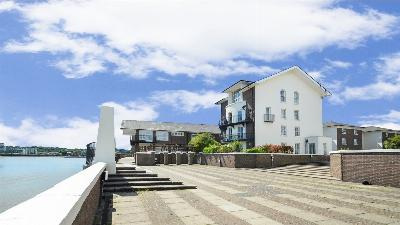This section has been prepared to provide residents with important and helpful information about living on the Estate. For any queries concerning the management of the communal areas of the development or the terms of the property transfers and leases please do not hesitate to contact Chris Ryan at Inspired Property Management (IPM) using the following details;
Phone: 01302 729 500.
Email: chrisryan@inspiredpm.co.uk
Building and Decorating
If you are having building or decorating work carried out in your property, please consider your neighbours by following these simple guidelines. Ensure that:
- You tell your immediate neighbours - particularly if there is likely to be any noise (such as drilling).
- Works are not carried out between 18:00 to 08:00 Monday to Friday, from 13:00 on Saturdays, and not at all on Sundays of Public holidays (as set out by the Tower Hamlets Council – Environmental Health department). See Noise
- Materials / waste are carefully brought in / out of your house or apartment without damage or mess being made to the common parts or the outside the buildings.
- No materials / waste are stored (not even briefly) in any common part of the estate, this includes the common parts of the building, outside pathways and car park.
Due to the high design quality of the Estate, when it was originally granted planning permission (ref PA/84/00535), so called ‘permitted development rights’ were removed. This means that external works which do not normally need permission such as extensions and conservatories need approval from the Council.
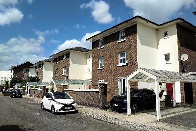 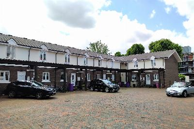
Common parts (including communal garden)
Compass Point was designed to be an attractive, prestigious development. We can all play a role in maintaining this intention by behaving responsibly in the upkeep of the common parts - both internal and external. This includes the responsible disposal of litter and rubbish (see also the section on ‘Recycling, rubbish and litter’ and ‘Removals’).
Deliveries
Food / supermarket and other deliveries should be made in social hours rather than unsocial hours, to reduce any possible disturbance to neighbours.
Flats
There are four blocks of flats on the Estate. These have some specific points to be aware of, as follows,
- Not to leave rubbish bags on the floor if the bins are full as foxes will create a mess. If bins are full, don't bring out bin bags till the morning of collection day.
- Bins need to be put back tidily after the collection and it is every flat's responsibility. If you see the bins not in the correct places, please put them back and not leave it for someone else.
- Smoking and cooking smells can waft through to other flats from the main bathroom which has a common soil pipe channel, so people should keep bathroom doors shut and be considerate of smells.
 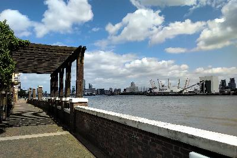
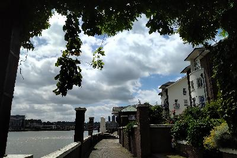
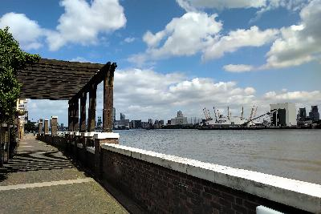
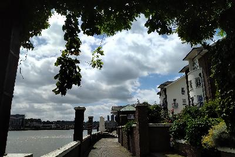
Gardens - Private
Please ensure all shrubbery and trees within your own garden are kept trimmed so as not to extend over your boundary and encroach on your neighbours private areas or communal areas. Those living on Mariners Mews should be aware the rear gardens, for your own private use under the terms of a licence, are actually owned by Tower Hamlets Council and there are conditions within the licence forbidding you to plant any deep rooted shrubs or trees or to carry out any excavations. The reason for this is there are tie bars and anchors beneath the ground that support the river wall and it is important these are not damaged.
HMOs / Holiday Lets
The Leases and Transfers state that each property should only be used as a single private dwelling – as such, letting out as a House in Multiple Occupation (HMO) or a holiday let is contrary to the terms of the lease. Each property is designed to be used as a single residence, and letting each room separately or as a holiday let often results in increased pressures on parking, poor rubbish disposal practices, noise along with other anti social behaviour issues, and is detrimental to Compass Point as a whole.
Lettings
Of course some owners will wish to let their property and the terms of the leases and transfers permit this. Letting one property under separate tenancies on a room by room basis (ie as a HMO) however is detrimental to Compass Point as a whole, as set out above. For this reason, the Leases and Transfers state that each property should only be used as a single private dwelling. Any owner wishing to let their property must consider this specific restrictive covenant and not let, or allow their agents to let, the property under multiple tenancies.
Noise
Please remember there are many other residents living at Compass Point. Show consideration in treating your neighbours, as you yourself would like to be treated. Please refrain from playing loud music especially of an evening. Your Lease or Transfer which you signed when you purchased your property, also states you should not do anything at your property or on the communal areas that may become a nuisance or annoyance to other residents. Should you be disturbed by any unreasonable noise, please contact Tower Hamlets Noise Team on 020 7364 5007.
A few further points about noise:
- The bass sounds of music penetrate through the building structure to cause an annoying buzzing sound in surrounding flats, sometimes right throughout the building. A sound level that seems entirely reasonable within your home can often cause a nuisance if the music includes heavy bass notes (which virtually all modern music does). Therefore consider lowering the bass balance as well as lowering the overall volume.
- As a party continues into the late evening, partygoers tend to increase the volume of their sound system. They do so because they falsely perceive the sound levels to have decreased. This is because they may become uninhibited through the consumption of alcohol or because their actual sense of sound levels will have been affected by being exposed to continuous music.
- If you are having a get together or even just out in the garden at night, the noise at 11pm can disturb neighbours even if it is not music and just people talking.
- Noise often prevents people from sleeping, which is of course something that all residents are entitled to.
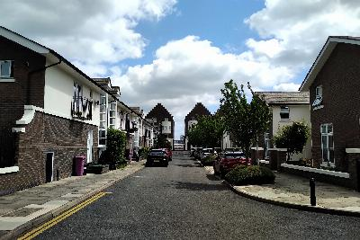
Ownership
The Estate has a somewhat complex mix of ownerships. The common areas of Chichester Way, Sextant Avenue and Saunders Ness Road are owned by LB Tower Hamlets, but leased to Holding and Management, who have appointed Homeground as their agents, and they are maintained / managed by IPM. The common areas of Blyth Close, Francis Close and Mariners Mews are owned by Holding and Management who have appointed Homeground as their agents and they are maintained / managed by IPM. The river walkway is owned and maintained by LB Tower Hamlets (although the pergolas are the responsibility of Holdings and Management). The individual demarked parking spaces are then owned by specific residents.
Painting (exterior)
The paint colour on the render to the buildings and the concrete tops to walls is Dulux Trade Smooth Masonry paint, Lilywhite, which can be made up at the Dulux decorator centres.
Rubbish and Recycling
Each resident at Compass Point must have their own wheelie bins for their waste. If your bin is lost or stolen, please purchase a new one privately. Rubbish should not be put into neighbours’ bins or left on the street (as bags will be ripped open by foxes causing rubbish to spill everywhere). Bins should be pulled out to the kerb side on collection days and kept within the boundaries of your house or apartment building at all other times.
Bin collections are currently undertaken on Wednesday for most of the Estate with Blyth Close being on Monday, with following being collected separately.
- General waste
- Recycling
- Garden waste
- Food waste
Should you have any larger items that the refuse collectors will not take away such as furniture and electrical items please take these to the Reuse and Recycling Centre at Northunberland Wharf, not too far away at Yabsley Street, E14 9RG. If it is an item of furniture that is still in good condition, please contact Homestore on 020 8519 6264 who will collect it free of charge and sell it at low cost to those in need.
Tower Hamlets Council also offer each household two free bulky item collections free of charge if you call them on 020 7364 5004.
www.towerhamlets.gov.uk/lgnl/environment_and_waste/recycling_and_waste/Recycling_and_waste.aspx
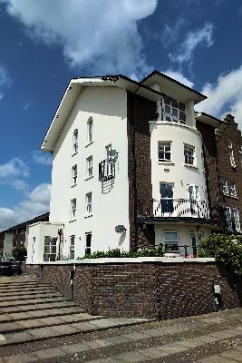 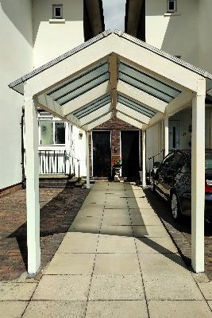 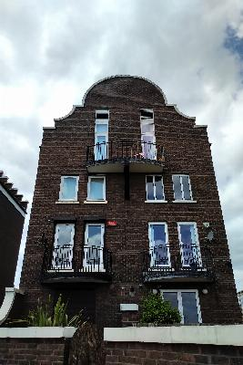 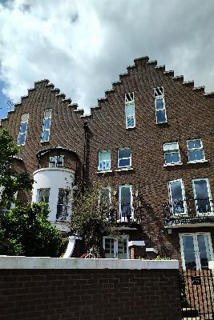 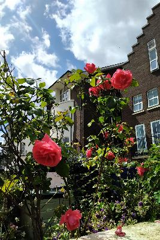